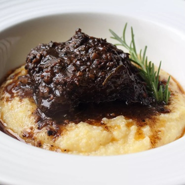

Peposa Dell’Impruneta (Tuscan Black Pepper Beef)

About This Recipe
The story goes that terracotta tile workers in Impruneta, Tuscany, would place this stew into clay pots and cook it in their still-hot kilns overnight where it would be ready in the morning. They used a lot of pepper because the meat was not always top quality. The amount of pepper is up to you–I used a ridiculous amount, but even so it wasn’t overpowering.
Ingredients
- 6 beef short ribs (8 to 10 oz. each)
- 1 tablespoon kosher salt
- 8 cloves garlic, peeled and crushed
- 1 tablespoon tomato paste
- 2 tablespoons whole black peppercorns, freshly crushed
- 1 tablespoon freshly ground black pepper
- 3 sage leaves
- 3 small sprigs fresh rosemary
- 2 bay leaves
- 2 cups red wine, preferably Chianti
- Salt to taste, to adjust sauce
Directions
Step 1
Place meat in a large mixing bowl. Sprinkle all sides generously with 1 tablespoon kosher salt.
Step 2
Place chopped garlic and a pinch of salt in a mortar and mash with pestle until pastelike. Add tomato paste; mash until blended. Transfer mixture into bowl with beef and rub onto all sides of meat. Add crushed peppercorns and ground pepper. Distribute evenly over all sides of beef. Transfer to a deep skillet or Dutch oven bone side down. Tuck sage leaves, rosemary, and dry bay leaves between pieces of meat. Carefully add wine along the side of the pan to avoid washing over the top of the meat.
Step 3
Place pan over high heat and bring to a simmer; reduce heat to low. Cover tightly. Cook until meat is fork tender, turning pieces every 30 minutes or so, about 3 1/2 hours. Transfer pieces of meat to a warm bowl.
Step 4
Increase heat to high and bring braising liquid to a boil. Simmer until liquid is reduced by about half or until slightly thickened, 8 to 10 minutes. Remove bones from meat.
Step 5
When sauce is thickened, transfer meat back to skillet. Reduce heat to medium-low and spoon sauce over meat. Cook until heated through, about 5 minutes.
Chef’s Notes
-
Meat Substitutions: Beef shank is traditionally used in this recipe, but the short ribs worked really well. You could even use chunks of beef chuck, but you would need to adjust the cooking time. Just remember, cook until a fork goes easily into the meat.
-
Serving Suggestions: This is delicious served over polenta, but you could also serve it over rice or pasta.
Recipe adapted from Allrecipes.com